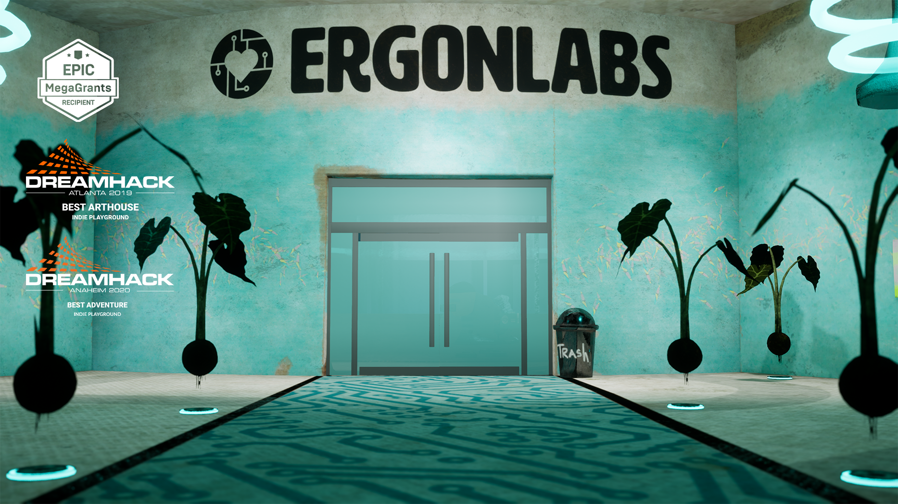

Wetware
Wetware
Co-Director / Animation Lead / Art Director
Project Goals
What is your definition of consciousness when applied to AI technology? Our goal is to open up discussions around AI ethics.
Summary
Wetware is my MFA thesis. It is a first-person game about the interplay between AI ethics and consciousness. You are a lab scientist tasked with probing information from a captured enemy drone. Your country is at war and you're the only hope. As you work to uncover enemy plans, you learn there's more secrets in the lab than just those from the enemy drone.